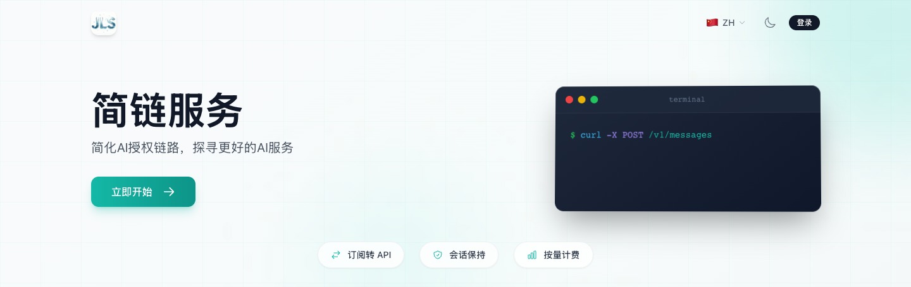
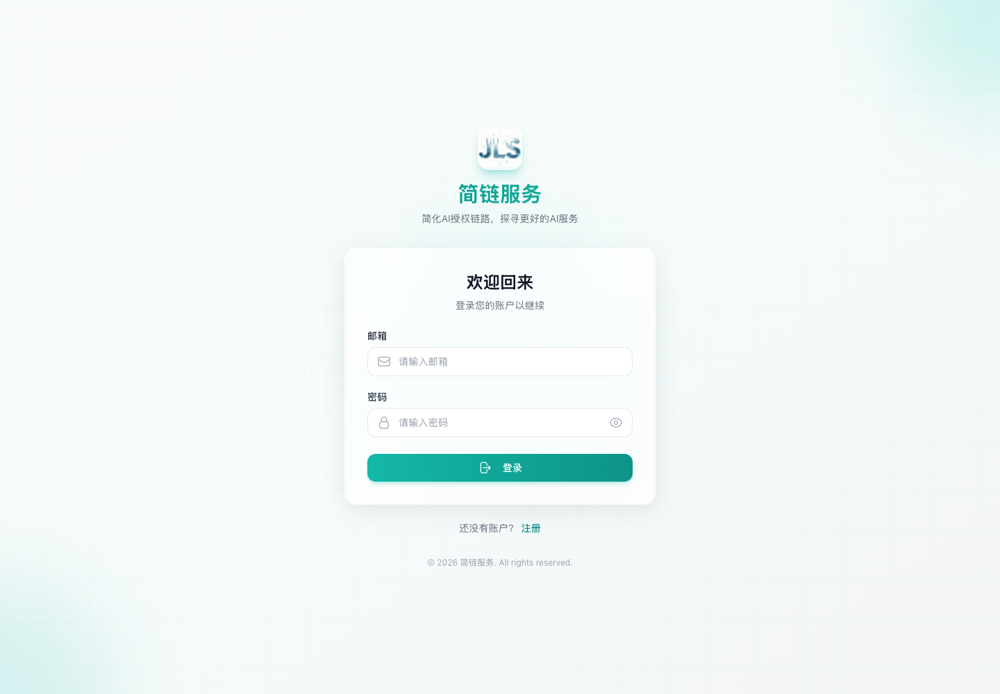
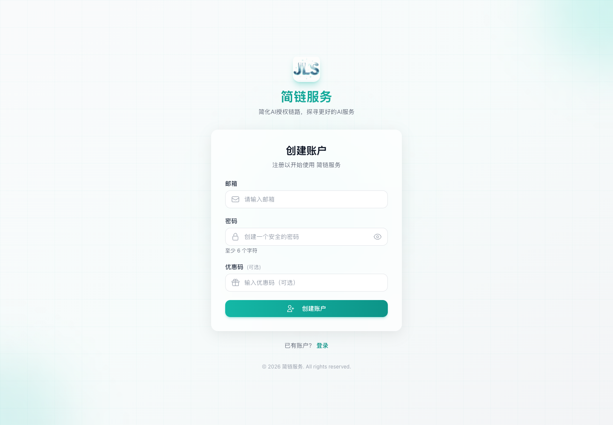
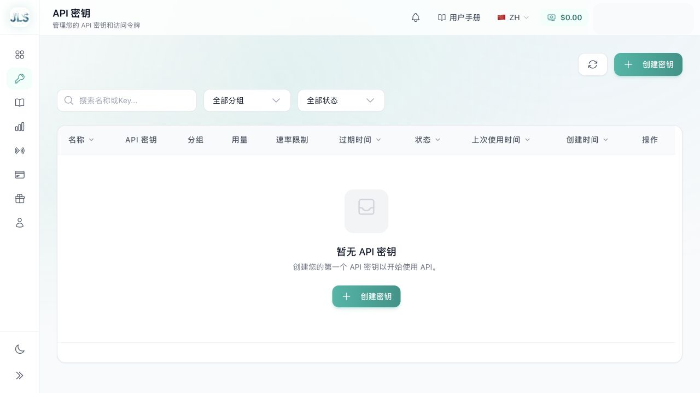
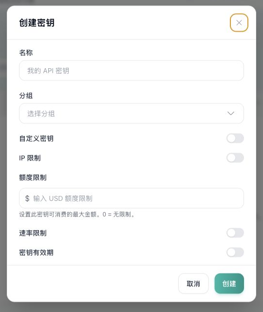
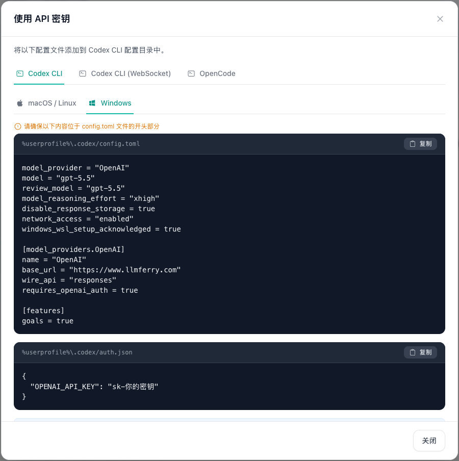
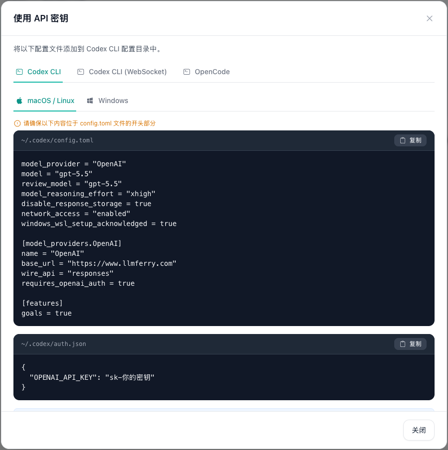

LLMFerry 普通用户使用手册
简链服务用于把企业的 AI 授权、密钥、模型和用量统一管理起来。普通用户只要登录控制台，复制自己的 API Key，再把它填到 IDE、Codex、Claude Code 或代码里即可。
https://www.llmferry.com/home
https://www.llmferry.com/home，进入简链服务控制台。
sk- 开头，复制后粘贴到工具里。它等同于密码。
https://www.llmferry.com/v1。
gpt-5.5。
登录密码只用于进入控制台；IDE、代码和工具里要填的是你在控制台创建出来的 sk-... 密钥。

登录 LLMFerry
普通用户进入控制台后，主要关注左侧「我的账户」下面的「API 密钥」「使用记录」「渠道状态」「我的订阅」等个人使用菜单。
- 登录地址
- https://www.llmferry.com/home
- 账号
- 使用自己注册的邮箱，或由您的销售协助开通的账号
- 密码
- 使用自己设置的密码；手册不提供公共密码
- 注册入口
- 登录页底部点击「还没有账户？注册」
- 站点名称
- 简链服务
打开控制台
在浏览器访问 https://www.llmferry.com/home。如果页面没有自动跳到登录页，点击右上角「登录」。
没有账号先注册
在登录页底部点击「还没有账户？注册」。具体填写方式见下一节「注册账号」。
已有账号直接登录
使用自己注册的邮箱和密码登录。不要使用他人的账号，也不要多人共用同一个账号。
找到个人菜单
登录成功后，普通用户主要看「我的账户」下面的菜单：API 密钥、使用记录、渠道状态、我的订阅、兑换。
每位用户都应使用自己的账号登录，便于密钥、用量和费用独立管理。如果注册失败或看不到注册入口，请联系您的销售协助开通。

注册账号
如果还没有自己的 LLMFerry 账号，先从登录页进入注册页。注册时只填写个人或企业邮箱和自己设置的密码；优惠码没有则留空。
- 注册入口
- 登录页底部点击「还没有账户？注册」
- 直接地址
- https://www.llmferry.com/register
- 邮箱
- 建议使用常用邮箱，便于后续识别账号和处理服务开通
- 密码
- 自己设置并妥善保存，页面要求至少 6 个字符
- 优惠码
- 可选；销售没有单独提供时，直接留空
进入注册页
打开 https://www.llmferry.com/home，在登录页底部点击「还没有账户？注册」。也可以直接访问 https://www.llmferry.com/register。
填写邮箱
在「邮箱」输入框填写自己的常用邮箱。不要填写他人的邮箱，也不要多人共用同一个邮箱账号。
设置密码
在「密码」输入框设置自己的登录密码。密码至少 6 个字符，建议不要和其他系统使用完全相同的密码。
优惠码没有就留空
「优惠码」是可选项。只有您的销售明确给了优惠码时才填写；没有拿到优惠码时，保持空白即可。
创建账户并登录
点击「创建账户」。注册成功后回到登录页，用刚才填写的邮箱和密码登录控制台。
如果看不到注册入口、注册失败、提示邮箱不可用，或登录后看不到「API 密钥」菜单，请联系您的销售协助开通账号或确认权限。

创建和复制 API Key
API Key 是每个工具真正用来访问 AI 服务的凭证。普通用户可以按用途创建不同密钥，例如「张三-Codex」「客服机器人-测试」。
进入 API 密钥页面
登录后，在左侧「我的账户」区域找到「API 密钥」。如果看不到，请联系您的销售确认账号开通、套餐或分组。
点击创建密钥
名称写清楚用途；分组选择页面可用的分组。如果不确定选哪个分组，请联系您的销售确认。普通用户通常不用开启「自定义密钥」。
复制 sk- 开头的密钥
创建后在列表里复制完整密钥。后面配置 IDE、Codex、Claude Code 或代码时，都要粘贴这个值。
不用或泄露时及时禁用
发现密钥被外发、提交到代码仓库、截图泄露，先禁用旧密钥，再创建新密钥。


Base URL 怎么填
很多配置失败都不是 Key 错，而是 Base URL 写错。记住：/home 是网页登录地址，不要填进 API Base URL。
- 网页登录
- https://www.llmferry.com/home
- IDE 插件 / SDK
- https://www.llmferry.com/v1
- 普通 HTTP 请求
- https://www.llmferry.com/v1
- Codex 配置
- https://www.llmferry.com
- Claude Code 环境变量
- https://www.llmferry.com
- CC Switch Provider
- https://www.llmferry.com/
工具里如果写着「OpenAI Compatible / OpenAI 兼容」，通常填 https://www.llmferry.com/v1。
非代码方式使用：先看自己的系统
这一部分给“不写代码，只想在 IDE、Codex、Claude Code 里直接用”的用户。先选 Windows 或 macOS，再按对应步骤配置。
Windows 用户
方式 A：普通 IDE 插件
适合 VS Code、JetBrains、Cursor 等支持「OpenAI Compatible」或「自定义 API 地址」的插件。
- Provider
- OpenAI Compatible / OpenAI 兼容
- API Key
- 粘贴你的 sk-... 密钥
- Base URL
- https://www.llmferry.com/v1
- Model
- 先填销售提供的模型；没有明确说明时先试 gpt-5.5
- 测试问题
- Reply with exactly: pong
方式 B：Codex / ChatGPT 编程助手
在「API 密钥」页面找到密钥，点击「使用密钥」，选择 Codex CLI 和 Windows。按页面提示复制到下面两个文件。

model_provider = "OpenAI"
model = "gpt-5.5"
review_model = "gpt-5.5"
model_reasoning_effort = "xhigh"
disable_response_storage = true
network_access = "enabled"
windows_wsl_setup_acknowledged = true
[model_providers.OpenAI]
name = "OpenAI"
base_url = "https://www.llmferry.com"
wire_api = "responses"
requires_openai_auth = true
[features]
goals = true{
"OPENAI_API_KEY": "sk-你的密钥"
}如果你在 Windows 里使用 WSL，通常按 macOS / Linux 路径处理 WSL 内部配置。
方式 C：Claude Code / CC Switch
不想手动改配置文件时，优先用 CC Switch。添加供应商时名称填 LLMFerry，Base URL 填 https://www.llmferry.com/，API Key 填你的 sk-...。
$env:ANTHROPIC_BASE_URL = "https://www.llmferry.com"
$env:ANTHROPIC_AUTH_TOKEN = "sk-你的密钥"
$env:CLAUDE_CODE_DISABLE_NONESSENTIAL_TRAFFIC = "1"
$env:CLAUDE_CODE_ATTRIBUTION_HEADER = "0"{
"env": {
"ANTHROPIC_BASE_URL": "https://www.llmferry.com",
"ANTHROPIC_AUTH_TOKEN": "sk-你的密钥",
"CLAUDE_CODE_DISABLE_NONESSENTIAL_TRAFFIC": "1",
"CLAUDE_CODE_ATTRIBUTION_HEADER": "0"
}
}macOS 用户
方式 A：普通 IDE 插件
和 Windows 一样，普通 IDE 插件只需要填服务商、API Key、Base URL 和模型。
- Provider
- OpenAI Compatible / OpenAI 兼容
- API Key
- 粘贴你的 sk-... 密钥
- Base URL
- https://www.llmferry.com/v1
- Model
- 先填销售提供的模型；没有明确说明时先试 gpt-5.5
- 测试问题
- Reply with exactly: pong
方式 B：Codex / ChatGPT 编程助手
在「API 密钥」页面点击「使用密钥」，选择 Codex CLI 和 macOS / Linux。配置目录是 ~/.codex；如果文件夹不存在，先运行 mkdir -p ~/.codex。

model_provider = "OpenAI"
model = "gpt-5.5"
review_model = "gpt-5.5"
model_reasoning_effort = "xhigh"
disable_response_storage = true
network_access = "enabled"
windows_wsl_setup_acknowledged = true
[model_providers.OpenAI]
name = "OpenAI"
base_url = "https://www.llmferry.com"
wire_api = "responses"
requires_openai_auth = true
[features]
goals = true{
"OPENAI_API_KEY": "sk-你的密钥"
}Finder 打开配置目录：按 Command + Shift + G，输入 ~/.codex。
方式 C：Claude Code / CC Switch
macOS 用户也推荐优先用 CC Switch。供应商名称填 LLMFerry，Base URL 填 https://www.llmferry.com/，模型映射按销售提供的说明填写。
export ANTHROPIC_BASE_URL="https://www.llmferry.com"
export ANTHROPIC_AUTH_TOKEN="sk-你的密钥"
export CLAUDE_CODE_DISABLE_NONESSENTIAL_TRAFFIC=1
export CLAUDE_CODE_ATTRIBUTION_HEADER=0{
"env": {
"ANTHROPIC_BASE_URL": "https://www.llmferry.com",
"ANTHROPIC_AUTH_TOKEN": "sk-你的密钥",
"CLAUDE_CODE_DISABLE_NONESSENTIAL_TRAFFIC": "1",
"CLAUDE_CODE_ATTRIBUTION_HEADER": "0"
}
}不知道自己该选哪种方式
按下面顺序选，最不容易出错。
只是给 IDE 插件填配置
看 Windows 或 macOS 里的「普通 IDE 插件」，Base URL 用 https://www.llmferry.com/v1。
使用 Codex 或 ChatGPT 编程助手
看「Codex / ChatGPT 编程助手」，按系统复制到 .codex 配置文件。
使用 Claude Code
优先用 CC Switch；如果销售提供的说明要求手动配置，再写环境变量或 settings.json。
在代码里调用
这一部分主要给研发同事。普通用户只需要把下面 4 个信息交给研发即可。
- API Key
- 你的 sk-... 密钥
- Base URL
- https://www.llmferry.com/v1
- 模型
- 销售提供的模型，或先用 gpt-5.5 测试
- 协议
- OpenAI 兼容接口
npm install openaiimport OpenAI from "openai";
const client = new OpenAI({
apiKey: process.env.OPENAI_API_KEY,
baseURL: "https://www.llmferry.com/v1",
});
const response = await client.chat.completions.create({
model: "gpt-5.5",
messages: [{ role: "user", content: "Reply with exactly: pong" }],
});
console.log(response.choices[0].message.content);pip install openaiimport os
from openai import OpenAI
client = OpenAI(
api_key=os.environ["OPENAI_API_KEY"],
base_url="https://www.llmferry.com/v1",
)
response = client.chat.completions.create(
model="gpt-5.5",
messages=[{"role": "user", "content": "Reply with exactly: pong"}],
)
print(response.choices[0].message.content)export OPENAI_API_KEY="sk-你的密钥"
export OPENAI_BASE_URL="https://www.llmferry.com/v1"$env:OPENAI_API_KEY = "sk-你的密钥"
$env:OPENAI_BASE_URL = "https://www.llmferry.com/v1"curl https://www.llmferry.com/v1/chat/completions \
-H "Authorization: Bearer $OPENAI_API_KEY" \
-H "Content-Type: application/json" \
-d '{
"model": "gpt-5.5",
"messages": [
{"role": "user", "content": "Reply with exactly: pong"}
]
}'查看用量和费用
配置成功后，回到控制台的「使用记录」查看每次调用的模型、时间、Token 和费用。如果发现异常高用量，先禁用对应 API Key，再联系您的销售协助确认。
常见问题
- 401
- API Key 没填、填错、复制少字符，或认证格式不对。重新复制完整 sk-... 再试。
- 404
- Base URL 或模型名写错。OpenAI 兼容场景要用 https://www.llmferry.com/v1。
- 429
- 请求太频繁或额度受限。稍等再试；如果持续出现，请联系您的销售确认额度、并发或速率限制。
- 5xx
- 服务临时异常。稍后重试；如果一直失败，请查看渠道状态，或联系您的销售协助确认。
- 当前网络无法使用
- 可能是账号、额度、IP 限制或网络策略导致。换一个稳定网络重试；仍失败时联系您的销售确认。
- 前端网页能写 Key 吗
- 不能。前端、浏览器 JavaScript、移动端安装包都容易暴露 Key，应由后端代调。
最小成功检查清单
- 能打开并登录
https://www.llmferry.com/home - 能进入「API 密钥」页面
- 能复制到以
sk-开头的 API Key - IDE 或工具里 API Key 已填写完整
- Base URL 没写错，尤其注意不要把
/home填进去 - 模型先用销售提供的模型或
gpt-5.5测试 - 测试问题
Reply with exactly: pong能正常返回 - 「使用记录」里能看到刚才的调用记录